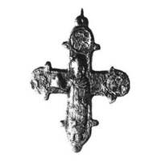

Catalog › CE-1071 · KOR2003-III.2.1.11
Valvă de față cu prinț cu model de templu, retușat cu dalta, medalioane nielate deteriorate
sec. XII (1101–1200) · Kiev, Ucraina · Muzeul Rus de Stat, Sankt Petersburg (GRM), inv. М-3869
single valve of a reliquary cross, aramă; c. XII (1101–1200); found at Kiev, Ucraina; kept at Muzeul Rus de Stat, Sankt Petersburg (GRM).


Identificare
- Categorie
- Valvă izolată
- Material
- Aramă
- Tehnică
- Turnare în relief; Gravare (incizie); Niello
- Dimensiuni
- Î 60 × L 50 mm
Iconografie
- Avers
- Sf. Boris și Gleb; Neidentificat
- Descriere avers
- Valvă de față: sfârșitul balamalei de jos rupt, capătul drept al valvei pierdut (ruptură pe linia unui vechi lipit de restaurare). Imagine în relief a prințului cu modelul templului în mâna dreaptă, retușată cu dalta; imaginile nielate ale sfinților din medalioane sunt deteriorate (foc sau coroziune?), în ele s-au păstrat parțial linii de contur încrustate; adânciturile din proeminențele-„lacrimi” de la capătul de sus sunt de asemenea încrustate, similar adânciturii de pe scutul balamalei de sus, fără încrustare.
Datare și atribuire
- Datare
- sec. XII (1101–1200)
- Centru
- Necunoscut
- Tipologie
- Korzukhina–Peskova 2003, tip III 2 1
Descoperire
- Localitate
- Kiev
- Țară
- Ucraina
- Context
- Așezare
- Anul
- 1948
Păstrare și referințe
- Colecție
- Muzeul Rus de Stat, Sankt Petersburg (GRM)
- Nr. inventar
- М-3869
- Bibliografie
- G. F. Korzukhina, A. A. Peskova, Древнерусские энколпионы. Нагрудные кресты-реликварии XI–XIII вв., Sankt-Petersburg, 2003 [Korzukhina–Peskova 2003], p. 112, cat. nr. III 2 1/11, reprodusă la Табл. 60 (planșe, p. 302). Bibliografie citată în sursă: Каргер 1958, 387, 571, табл. LVIII; Древнерусское искусство, 17–18, № 8, рис. на с. 19; Корзухина, архив ф. 77, д. 15, л. 53.
- Figura
- Табл. 60
- Planșe
- Korzukhina–Peskova 2003, Табл. 60 (planșă fără paginație proprie în PDF; p. 302 tipărită)
- Observații
- Datare după Peskova: sec. XII. Circumstanțe: Săpături sub conducerea lui M. K. Karger, 1948, în curtea Muzeului de Istorie din Kiev. Proveniență în colecție: intrat în 1979 de la LOIA AN SSSR. Fotografie ИИМК РАН. Coordonate: nu sunt date în sursă.
Citare: Corpus Encolpiorum, CE-1071, Valvă de față cu prinț cu model de templu, retușat cu dalta, medalioane nielate deteriorate, https://vitaliejosanu1979-ux.github.io/primul-meu-proiect/piese/KOR2003-III.2.1.11/ (accesat 2026-10-17).